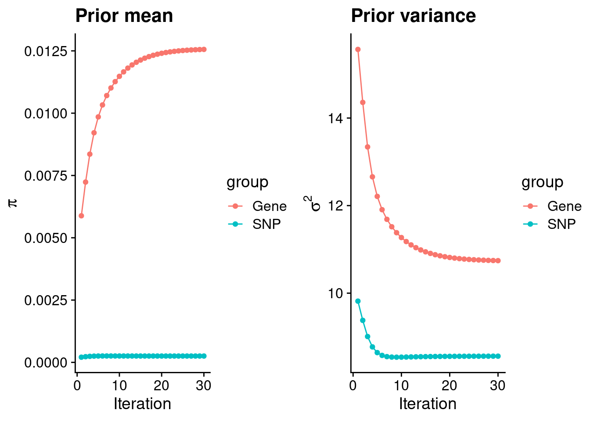
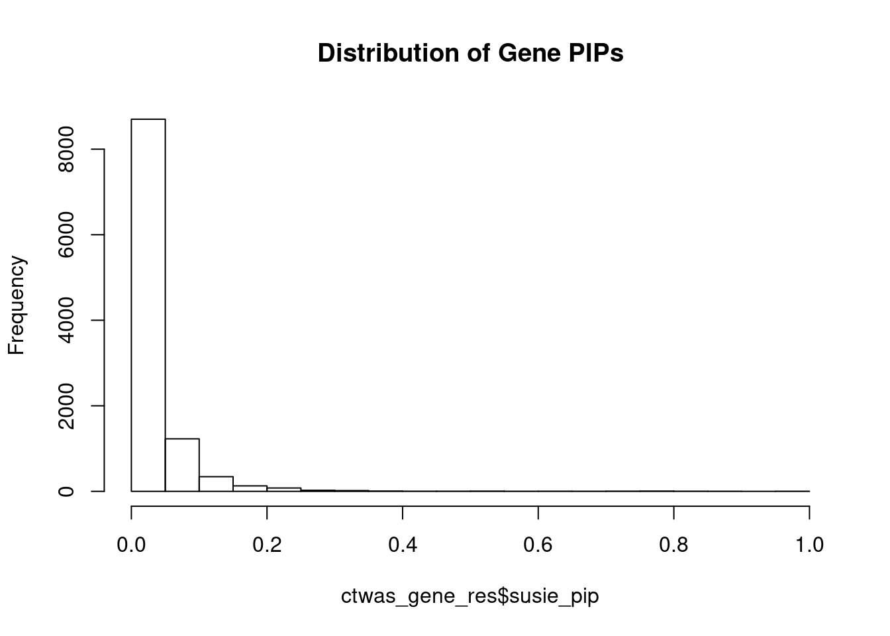
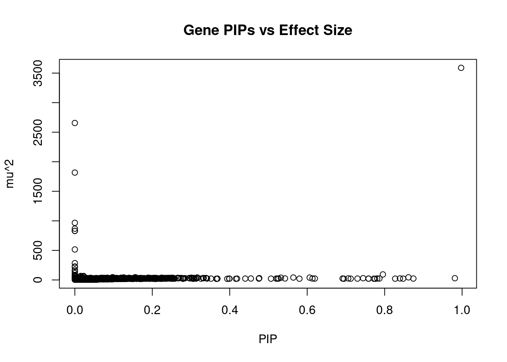
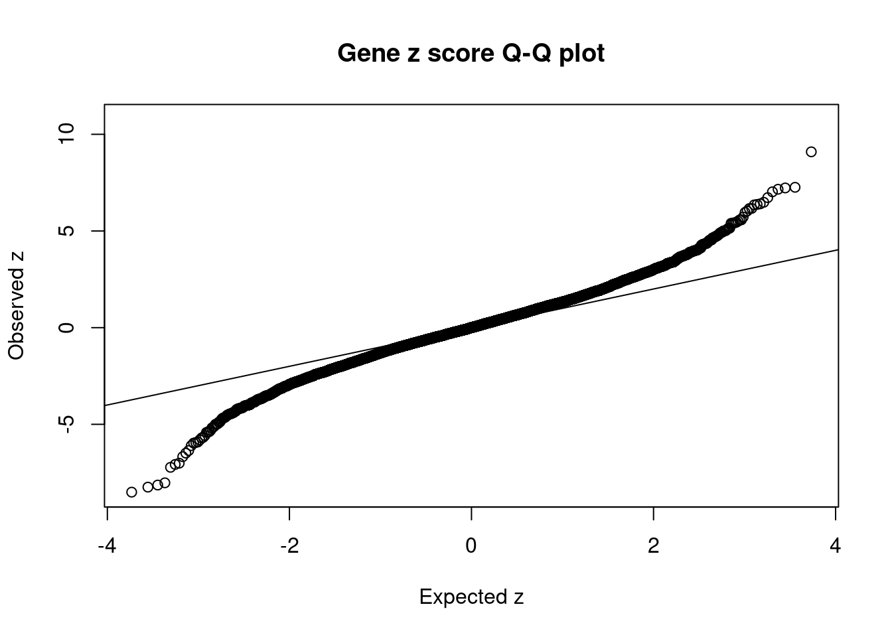
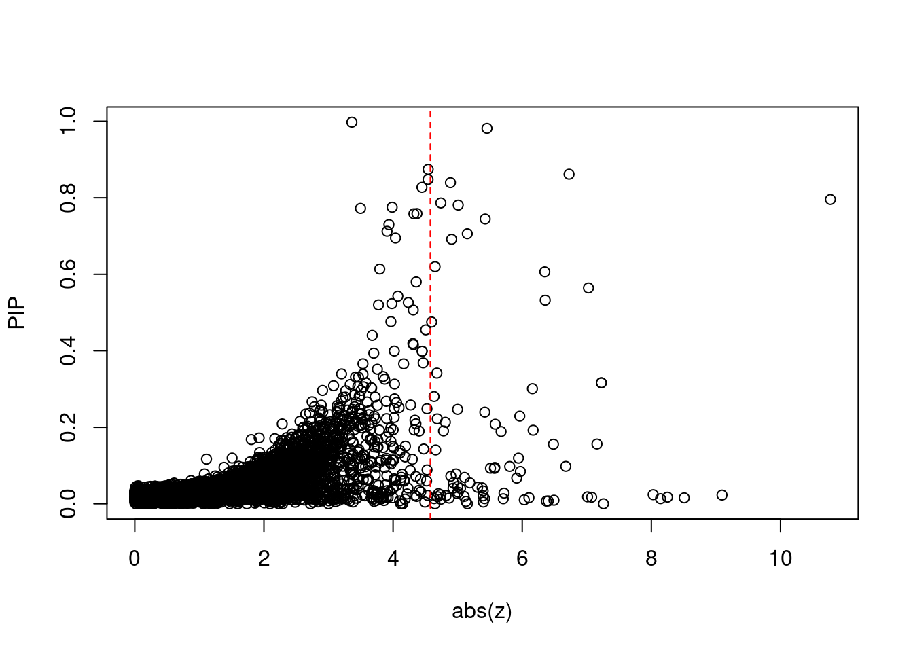
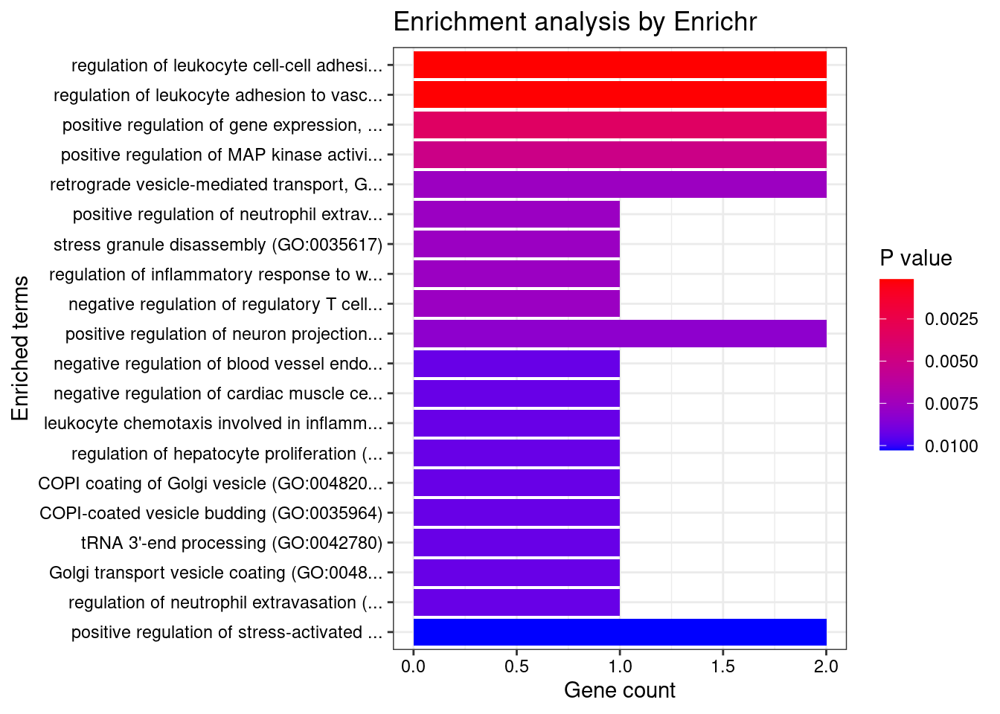
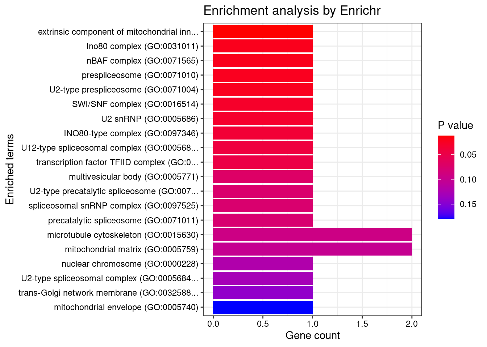
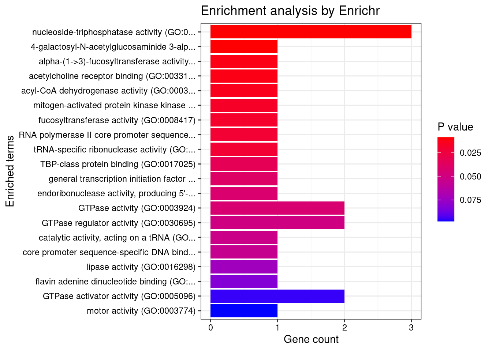
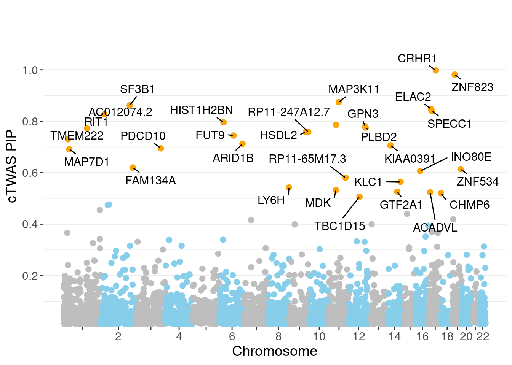
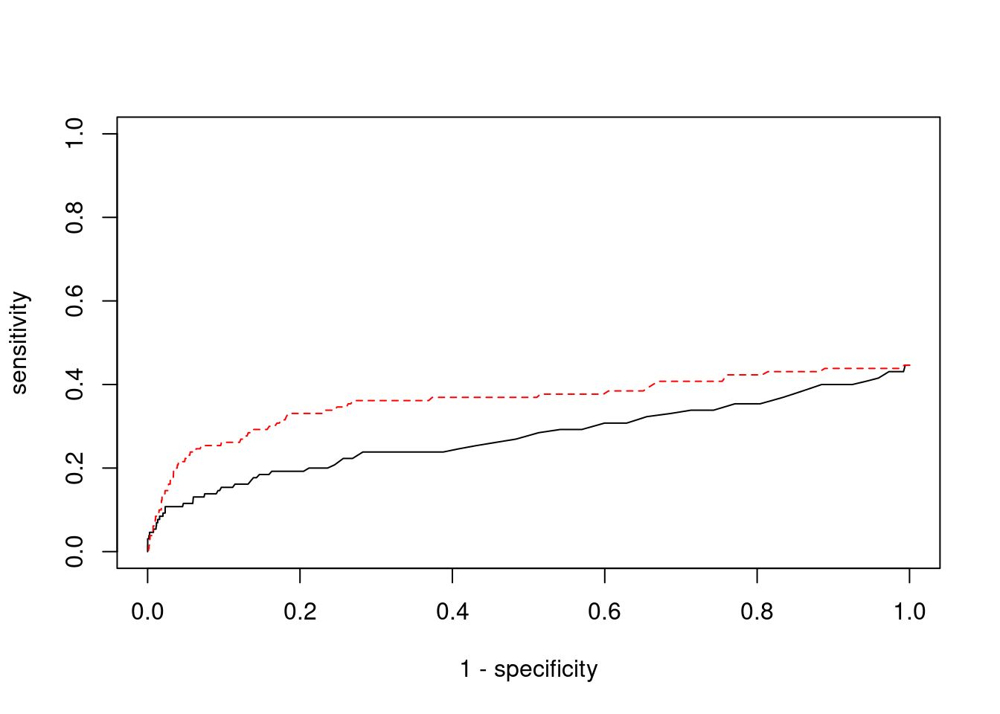

Last updated: 2022-02-27
Checks: 6 1
Knit directory: cTWAS_analysis/
This reproducible R Markdown analysis was created with workflowr (version 1.6.2). The Checks tab describes the reproducibility checks that were applied when the results were created. The Past versions tab lists the development history.
Great! Since the R Markdown file has been committed to the Git repository, you know the exact version of the code that produced these results.
Great job! The global environment was empty. Objects defined in the global environment can affect the analysis in your R Markdown file in unknown ways. For reproduciblity it’s best to always run the code in an empty environment.
The command set.seed(20211220) was run prior to running the code in the R Markdown file. Setting a seed ensures that any results that rely on randomness, e.g. subsampling or permutations, are reproducible.
Great job! Recording the operating system, R version, and package versions is critical for reproducibility.
Nice! There were no cached chunks for this analysis, so you can be confident that you successfully produced the results during this run.
Using absolute paths to the files within your workflowr project makes it difficult for you and others to run your code on a different machine. Change the absolute path(s) below to the suggested relative path(s) to make your code more reproducible.
| absolute | relative |
|---|---|
| /project2/xinhe/shengqian/cTWAS/cTWAS_analysis/data/ | data |
| /project2/xinhe/shengqian/cTWAS/cTWAS_analysis/code/ctwas_config.R | code/ctwas_config.R |
Great! You are using Git for version control. Tracking code development and connecting the code version to the results is critical for reproducibility.
The results in this page were generated with repository version 1c69dd2. See the Past versions tab to see a history of the changes made to the R Markdown and HTML files.
Note that you need to be careful to ensure that all relevant files for the analysis have been committed to Git prior to generating the results (you can use wflow_publish or wflow_git_commit). workflowr only checks the R Markdown file, but you know if there are other scripts or data files that it depends on. Below is the status of the Git repository when the results were generated:
Ignored files:
Ignored: .ipynb_checkpoints/
Ignored: data/AF/
Untracked files:
Untracked: Rplot.png
Untracked: analysis/.ipynb_checkpoints/
Untracked: analysis/Autism_Brain_Amygdala.Rmd
Untracked: analysis/Autism_Brain_Anterior_cingulate_cortex_BA24.Rmd
Untracked: analysis/Autism_Brain_Caudate_basal_ganglia.Rmd
Untracked: analysis/Autism_Brain_Cerebellar_Hemisphere.Rmd
Untracked: analysis/Autism_Brain_Cerebellum.Rmd
Untracked: analysis/Autism_Brain_Cortex.Rmd
Untracked: analysis/Autism_Brain_Frontal_Cortex_BA9.Rmd
Untracked: analysis/Autism_Brain_Hippocampus.Rmd
Untracked: analysis/Autism_Brain_Hypothalamus.Rmd
Untracked: analysis/Autism_Brain_Nucleus_accumbens_basal_ganglia.Rmd
Untracked: analysis/Autism_Brain_Putamen_basal_ganglia.Rmd
Untracked: analysis/Autism_Brain_Spinal_cord_cervical_c-1.Rmd
Untracked: analysis/Autism_Brain_Substantia_nigra.Rmd
Untracked: analysis/Glucose_Adipose_Subcutaneous.Rmd
Untracked: analysis/Glucose_Adipose_Visceral_Omentum.Rmd
Untracked: analysis/Splicing_Test.Rmd
Untracked: code/.ipynb_checkpoints/
Untracked: code/AF_out/
Untracked: code/Autism_out/
Untracked: code/BMI_S_out/
Untracked: code/BMI_out/
Untracked: code/Glucose_out/
Untracked: code/LDL_S_out/
Untracked: code/SCZ_out/
Untracked: code/T2D_out/
Untracked: code/ctwas_config.R
Untracked: code/mapping.R
Untracked: code/out/
Untracked: code/run_AF_analysis.sbatch
Untracked: code/run_AF_analysis.sh
Untracked: code/run_AF_ctwas_rss_LDR.R
Untracked: code/run_Autism_analysis.sbatch
Untracked: code/run_Autism_analysis.sh
Untracked: code/run_Autism_ctwas_rss_LDR.R
Untracked: code/run_BMI_analysis.sbatch
Untracked: code/run_BMI_analysis.sh
Untracked: code/run_BMI_analysis_S.sbatch
Untracked: code/run_BMI_analysis_S.sh
Untracked: code/run_BMI_ctwas_rss_LDR.R
Untracked: code/run_BMI_ctwas_rss_LDR_S.R
Untracked: code/run_Glucose_analysis.sbatch
Untracked: code/run_Glucose_analysis.sh
Untracked: code/run_Glucose_ctwas_rss_LDR.R
Untracked: code/run_LDL_analysis_S.sbatch
Untracked: code/run_LDL_analysis_S.sh
Untracked: code/run_LDL_ctwas_rss_LDR_S.R
Untracked: code/run_SCZ_analysis.sbatch
Untracked: code/run_SCZ_analysis.sh
Untracked: code/run_SCZ_ctwas_rss_LDR.R
Untracked: code/run_T2D_analysis.sbatch
Untracked: code/run_T2D_analysis.sh
Untracked: code/run_T2D_ctwas_rss_LDR.R
Untracked: data/.ipynb_checkpoints/
Untracked: data/Autism/
Untracked: data/BMI/
Untracked: data/BMI_S/
Untracked: data/Glucose/
Untracked: data/LDL_S/
Untracked: data/SCZ/
Untracked: data/T2D/
Untracked: data/TEST/
Untracked: data/UKBB/
Untracked: data/UKBB_SNPs_Info.text
Untracked: data/gene_OMIM.txt
Untracked: data/gene_pip_0.8.txt
Untracked: data/mashr_Heart_Atrial_Appendage.db
Untracked: data/mashr_sqtl/
Untracked: data/summary_known_genes_annotations.xlsx
Untracked: data/untitled.txt
Unstaged changes:
Modified: analysis/BMI_Brain_Amygdala_S.Rmd
Modified: analysis/BMI_Brain_Anterior_cingulate_cortex_BA24_S.Rmd
Modified: analysis/BMI_Brain_Caudate_basal_ganglia_S.Rmd
Modified: analysis/BMI_Brain_Cerebellar_Hemisphere_S.Rmd
Modified: analysis/BMI_Brain_Cerebellum_S.Rmd
Modified: analysis/BMI_Brain_Cortex.Rmd
Modified: analysis/BMI_Brain_Cortex_S.Rmd
Modified: analysis/BMI_Brain_Frontal_Cortex_BA9_S.Rmd
Modified: analysis/BMI_Brain_Hippocampus_S.Rmd
Modified: analysis/BMI_Brain_Hypothalamus_S.Rmd
Modified: analysis/BMI_Brain_Nucleus_accumbens_basal_ganglia_S.Rmd
Modified: analysis/BMI_Brain_Putamen_basal_ganglia_S.Rmd
Modified: analysis/BMI_Brain_Spinal_cord_cervical_c-1_S.Rmd
Modified: analysis/BMI_Brain_Substantia_nigra_S.Rmd
Modified: analysis/LDL_Liver_S.Rmd
Note that any generated files, e.g. HTML, png, CSS, etc., are not included in this status report because it is ok for generated content to have uncommitted changes.
These are the previous versions of the repository in which changes were made to the R Markdown (analysis/SCZ_Brain_Spinal_cord_cervical_c-1.Rmd) and HTML (docs/SCZ_Brain_Spinal_cord_cervical_c-1.html) files. If you’ve configured a remote Git repository (see ?wflow_git_remote), click on the hyperlinks in the table below to view the files as they were in that past version.
| File | Version | Author | Date | Message |
|---|---|---|---|---|
| Rmd | 1c69dd2 | sq-96 | 2022-02-27 | update |
| html | ff6403a | sq-96 | 2022-02-27 | Build site. |
| Rmd | 3dd5b4c | sq-96 | 2022-02-27 | update |
#number of imputed weights
nrow(qclist_all)[1] 10567#number of imputed weights by chromosome
table(qclist_all$chr)
1 2 3 4 5 6 7 8 9 10 11 12 13 14 15 16
1038 754 605 411 517 537 511 406 401 410 617 617 227 356 367 479
17 18 19 20 21 22
622 168 801 320 127 276 #number of imputed weights without missing variants
sum(qclist_all$nmiss==0)[1] 8626#proportion of imputed weights without missing variants
mean(qclist_all$nmiss==0)[1] 0.8163
| Version | Author | Date |
|---|---|---|
| ff6403a | sq-96 | 2022-02-27 |
#estimated group prior
estimated_group_prior <- group_prior_rec[,ncol(group_prior_rec)]
names(estimated_group_prior) <- c("gene", "snp")
estimated_group_prior["snp"] <- estimated_group_prior["snp"]*thin #adjust parameter to account for thin argument
print(estimated_group_prior) gene snp
0.012559 0.000254 #estimated group prior variance
estimated_group_prior_var <- group_prior_var_rec[,ncol(group_prior_var_rec)]
names(estimated_group_prior_var) <- c("gene", "snp")
print(estimated_group_prior_var) gene snp
10.743 8.561 #report sample size
print(sample_size)[1] 82315#report group size
group_size <- c(nrow(ctwas_gene_res), n_snps)
print(group_size)[1] 10567 7573890#estimated group PVE
estimated_group_pve <- estimated_group_prior_var*estimated_group_prior*group_size/sample_size #check PVE calculation
names(estimated_group_pve) <- c("gene", "snp")
print(estimated_group_pve) gene snp
0.01732 0.20011 #compare sum(PIP*mu2/sample_size) with above PVE calculation
c(sum(ctwas_gene_res$PVE),sum(ctwas_snp_res$PVE))[1] 0.1174 1.4749
| Version | Author | Date |
|---|---|---|
| ff6403a | sq-96 | 2022-02-27 |
genename region_tag susie_pip mu2 PVE z num_eqtl
3283 CRHR1 17_27 0.9975 3588.90 0.0434918 3.362 1
10447 ZNF823 19_10 0.9813 29.51 0.0003518 5.455 1
8557 MAP3K11 11_36 0.8742 23.79 0.0002526 -4.544 1
2890 SF3B1 2_117 0.8616 44.16 0.0004622 6.725 1
104 ELAC2 17_11 0.8479 21.96 0.0002262 4.542 1
3886 SPECC1 17_16 0.8395 25.83 0.0002634 -4.889 1
11504 AC012074.2 2_15 0.8272 21.80 0.0002191 4.447 2
11457 HIST1H2BN 6_21 0.7955 93.49 0.0009035 10.773 1
5935 ARFGAP2 11_29 0.7864 24.28 0.0002320 4.740 1
2497 GPN3 12_67 0.7808 24.83 0.0002355 5.009 1
6055 PLBD2 12_68 0.7752 20.28 0.0001910 3.986 1
5485 RIT1 1_76 0.7722 21.23 0.0001992 -3.496 1
12471 RP11-247A12.7 9_66 0.7587 22.39 0.0002063 4.370 2
3216 HSDL2 9_57 0.7581 22.24 0.0002048 4.322 1
8453 FUT9 6_65 0.7445 29.74 0.0002690 5.427 1
9840 TMEM222 1_19 0.7298 23.01 0.0002040 3.936 2
419 ARID1B 6_102 0.7124 22.04 0.0001908 3.907 1
1568 KIAA0391 14_9 0.7060 26.17 0.0002245 -5.150 2
2760 PDCD10 3_103 0.6947 20.40 0.0001722 -4.038 1
3025 MAP7D1 1_22 0.6914 24.16 0.0002029 4.907 1
| Version | Author | Date |
|---|---|---|
| ff6403a | sq-96 | 2022-02-27 |
genename region_tag susie_pip mu2 PVE z num_eqtl
3283 CRHR1 17_27 9.975e-01 3588.90 4.349e-02 3.36232 1
6658 ARHGAP27 17_27 0.000e+00 2655.82 0.000e+00 -2.09345 1
4998 PRDM5 4_78 3.307e-13 1816.66 7.299e-15 -2.24071 1
11575 RP11-325F22.2 7_65 0.000e+00 966.29 0.000e+00 4.64948 2
9135 HLA-DQB1 6_26 1.065e-13 867.87 1.123e-15 4.11762 1
11416 HLA-DQB2 6_26 1.030e-13 829.87 1.039e-15 -4.14865 1
11576 HLA-DQA2 6_26 1.030e-13 829.87 1.039e-15 -4.14865 1
10158 HLA-DRB1 6_26 2.827e-13 515.72 1.771e-15 5.15185 1
10266 HLA-DQA1 6_26 4.804e-13 284.17 1.658e-15 -1.06154 2
66 KMT2E 7_65 0.000e+00 227.32 0.000e+00 -2.22870 1
10753 MSH5 6_26 1.508e-12 221.11 4.051e-15 7.25864 1
10740 SKIV2L 6_26 1.756e-12 173.25 3.695e-15 -0.01504 1
4695 NMT1 17_27 0.000e+00 148.07 0.000e+00 2.72086 1
8517 DCAKD 17_27 0.000e+00 116.93 0.000e+00 -2.99967 1
11457 HIST1H2BN 6_21 7.955e-01 93.49 9.035e-04 10.77288 1
10988 CLIC1 6_26 5.148e-13 83.86 5.245e-16 0.46344 1
4529 RINT1 7_65 0.000e+00 74.80 0.000e+00 0.56463 2
9299 ACBD4 17_27 0.000e+00 70.30 0.000e+00 1.73582 1
10270 ZSCAN16 6_22 1.548e-02 67.84 1.276e-05 -8.50932 1
9836 BTN3A2 6_20 2.272e-02 67.49 1.863e-05 9.09444 2 genename region_tag susie_pip mu2 PVE z num_eqtl
3283 CRHR1 17_27 0.9975 3588.90 0.0434918 3.362 1
11457 HIST1H2BN 6_21 0.7955 93.49 0.0009035 10.773 1
2890 SF3B1 2_117 0.8616 44.16 0.0004622 6.725 1
10447 ZNF823 19_10 0.9813 29.51 0.0003518 5.455 1
8068 INO80E 16_24 0.6064 39.54 0.0002913 6.350 1
3741 KLC1 14_54 0.5642 41.29 0.0002830 7.026 1
8453 FUT9 6_65 0.7445 29.74 0.0002690 5.427 1
3886 SPECC1 17_16 0.8395 25.83 0.0002634 -4.889 1
8557 MAP3K11 11_36 0.8742 23.79 0.0002526 -4.544 1
2445 MDK 11_28 0.5321 38.44 0.0002485 -6.357 1
2497 GPN3 12_67 0.7808 24.83 0.0002355 5.009 1
5935 ARFGAP2 11_29 0.7864 24.28 0.0002320 4.740 1
104 ELAC2 17_11 0.8479 21.96 0.0002262 4.542 1
1568 KIAA0391 14_9 0.7060 26.17 0.0002245 -5.150 2
11504 AC012074.2 2_15 0.8272 21.80 0.0002191 4.447 2
12471 RP11-247A12.7 9_66 0.7587 22.39 0.0002063 4.370 2
3216 HSDL2 9_57 0.7581 22.24 0.0002048 4.322 1
9840 TMEM222 1_19 0.7298 23.01 0.0002040 3.936 2
3025 MAP7D1 1_22 0.6914 24.16 0.0002029 4.907 1
5485 RIT1 1_76 0.7722 21.23 0.0001992 -3.496 1 genename region_tag susie_pip mu2 PVE z num_eqtl
11457 HIST1H2BN 6_21 7.955e-01 93.49 9.035e-04 10.773 1
9836 BTN3A2 6_20 2.272e-02 67.49 1.863e-05 9.094 2
10270 ZSCAN16 6_22 1.548e-02 67.84 1.276e-05 -8.509 1
9594 HIST1H1B 6_21 1.726e-02 53.84 1.129e-05 -8.250 1
4810 PGBD1 6_22 1.331e-02 59.13 9.560e-06 -8.142 2
9231 HIST1H2BC 6_20 2.374e-02 53.30 1.537e-05 -8.028 1
10753 MSH5 6_26 1.508e-12 221.11 4.051e-15 7.259 1
7004 TYW5 2_118 3.162e-01 40.60 1.559e-04 -7.226 1
7005 MAIP1 2_118 3.162e-01 40.60 1.559e-04 7.226 1
440 MPHOSPH9 12_75 1.561e-01 46.28 8.779e-05 7.158 1
12858 HIST1H2BO 6_21 1.711e-02 41.74 8.673e-06 -7.075 1
3741 KLC1 14_54 5.642e-01 41.29 2.830e-04 7.026 1
2623 TRIM38 6_20 1.807e-02 40.40 8.869e-06 -7.012 2
2890 SF3B1 2_117 8.616e-01 44.16 4.622e-04 6.725 1
9981 ZSCAN23 6_22 9.773e-02 45.98 5.459e-05 -6.675 2
9354 ARL6IP4 12_75 9.288e-03 39.92 4.504e-06 -6.491 1
3313 SNX19 11_81 1.556e-01 42.66 8.062e-05 6.484 2
6037 ABCB9 12_75 7.382e-03 38.61 3.462e-06 6.404 1
2511 OGFOD2 12_75 6.986e-03 38.28 3.249e-06 6.374 1
2445 MDK 11_28 5.321e-01 38.44 2.485e-04 -6.357 1
| Version | Author | Date |
|---|---|---|
| ff6403a | sq-96 | 2022-02-27 |

| Version | Author | Date |
|---|---|---|
| ff6403a | sq-96 | 2022-02-27 |
[1] 0.007665 genename region_tag susie_pip mu2 PVE z num_eqtl
11457 HIST1H2BN 6_21 7.955e-01 93.49 9.035e-04 10.773 1
9836 BTN3A2 6_20 2.272e-02 67.49 1.863e-05 9.094 2
10270 ZSCAN16 6_22 1.548e-02 67.84 1.276e-05 -8.509 1
9594 HIST1H1B 6_21 1.726e-02 53.84 1.129e-05 -8.250 1
4810 PGBD1 6_22 1.331e-02 59.13 9.560e-06 -8.142 2
9231 HIST1H2BC 6_20 2.374e-02 53.30 1.537e-05 -8.028 1
10753 MSH5 6_26 1.508e-12 221.11 4.051e-15 7.259 1
7004 TYW5 2_118 3.162e-01 40.60 1.559e-04 -7.226 1
7005 MAIP1 2_118 3.162e-01 40.60 1.559e-04 7.226 1
440 MPHOSPH9 12_75 1.561e-01 46.28 8.779e-05 7.158 1
12858 HIST1H2BO 6_21 1.711e-02 41.74 8.673e-06 -7.075 1
3741 KLC1 14_54 5.642e-01 41.29 2.830e-04 7.026 1
2623 TRIM38 6_20 1.807e-02 40.40 8.869e-06 -7.012 2
2890 SF3B1 2_117 8.616e-01 44.16 4.622e-04 6.725 1
9981 ZSCAN23 6_22 9.773e-02 45.98 5.459e-05 -6.675 2
9354 ARL6IP4 12_75 9.288e-03 39.92 4.504e-06 -6.491 1
3313 SNX19 11_81 1.556e-01 42.66 8.062e-05 6.484 2
6037 ABCB9 12_75 7.382e-03 38.61 3.462e-06 6.404 1
2511 OGFOD2 12_75 6.986e-03 38.28 3.249e-06 6.374 1
2445 MDK 11_28 5.321e-01 38.44 2.485e-04 -6.357 1#number of genes for gene set enrichment
length(genes)[1] 31Uploading data to Enrichr... Done.
Querying GO_Biological_Process_2021... Done.
Querying GO_Cellular_Component_2021... Done.
Querying GO_Molecular_Function_2021... Done.
Parsing results... Done.
[1] "GO_Biological_Process_2021"
| Version | Author | Date |
|---|---|---|
| ff6403a | sq-96 | 2022-02-27 |
Term
1 regulation of leukocyte cell-cell adhesion (GO:1903037)
2 regulation of leukocyte adhesion to vascular endothelial cell (GO:1904994)
Overlap Adjusted.P.value Genes
1 2/12 0.02772 FUT9;MDK
2 2/13 0.02772 FUT9;MDK
[1] "GO_Cellular_Component_2021"
| Version | Author | Date |
|---|---|---|
| ff6403a | sq-96 | 2022-02-27 |
[1] Term Overlap Adjusted.P.value Genes
<0 rows> (or 0-length row.names)
[1] "GO_Molecular_Function_2021"
| Version | Author | Date |
|---|---|---|
| ff6403a | sq-96 | 2022-02-27 |
[1] Term Overlap Adjusted.P.value Genes
<0 rows> (or 0-length row.names) Description FDR Ratio BgRatio
5 Anxiety Disorders 0.01361 2/11 44/9703
56 Anxiety States, Neurotic 0.01361 2/11 44/9703
84 Anxiety neurosis (finding) 0.01361 2/11 44/9703
92 Cerebral Cavernous Malformations 3 0.01361 1/11 1/9703
96 Familial cerebral cavernous malformation 0.01361 1/11 1/9703
103 PROSTATE CANCER, HEREDITARY, 2 0.01361 1/11 1/9703
104 NOONAN SYNDROME 8 0.01361 1/11 1/9703
105 COMBINED OXIDATIVE PHOSPHORYLATION DEFICIENCY 17 0.01361 1/11 1/9703
107 Very long chain acyl-CoA dehydrogenase deficiency 0.01361 1/11 1/9703
30 Pain, Postoperative 0.01883 1/11 2/9703Loading the functional categories...
Loading the ID list...
Loading the reference list...
Performing the enrichment analysis...Warning in oraEnrichment(interestGeneList, referenceGeneList, geneSet, minNum =
minNum, : No significant gene set is identified based on FDR 0.05!NULLWarning: ggrepel: 1 unlabeled data points (too many overlaps). Consider
increasing max.overlaps
| Version | Author | Date |
|---|---|---|
| ff6403a | sq-96 | 2022-02-27 |
#number of genes in known annotations
print(length(known_annotations))[1] 130#number of genes in known annotations with imputed expression
print(sum(known_annotations %in% ctwas_gene_res$genename))[1] 58#significance threshold for TWAS
print(sig_thresh)[1] 4.576#number of ctwas genes
length(ctwas_genes)[1] 7#number of TWAS genes
length(twas_genes)[1] 81#show novel genes (ctwas genes with not in TWAS genes)
ctwas_gene_res[ctwas_gene_res$genename %in% novel_genes,report_cols] genename region_tag susie_pip mu2 PVE z num_eqtl
11504 AC012074.2 2_15 0.8272 21.80 0.0002191 4.447 2
8557 MAP3K11 11_36 0.8742 23.79 0.0002526 -4.544 1
104 ELAC2 17_11 0.8479 21.96 0.0002262 4.542 1
3283 CRHR1 17_27 0.9975 3588.90 0.0434918 3.362 1#sensitivity / recall
print(sensitivity) ctwas TWAS
0.03077 0.04615 #specificity
print(specificity) ctwas TWAS
0.9997 0.9929 #precision / PPV
print(precision) ctwas TWAS
0.57143 0.07407 
| Version | Author | Date |
|---|---|---|
| ff6403a | sq-96 | 2022-02-27 |
sessionInfo()R version 3.6.1 (2019-07-05)
Platform: x86_64-pc-linux-gnu (64-bit)
Running under: Scientific Linux 7.4 (Nitrogen)
Matrix products: default
BLAS/LAPACK: /software/openblas-0.2.19-el7-x86_64/lib/libopenblas_haswellp-r0.2.19.so
locale:
[1] LC_CTYPE=en_US.UTF-8 LC_NUMERIC=C
[3] LC_TIME=en_US.UTF-8 LC_COLLATE=en_US.UTF-8
[5] LC_MONETARY=en_US.UTF-8 LC_MESSAGES=en_US.UTF-8
[7] LC_PAPER=en_US.UTF-8 LC_NAME=C
[9] LC_ADDRESS=C LC_TELEPHONE=C
[11] LC_MEASUREMENT=en_US.UTF-8 LC_IDENTIFICATION=C
attached base packages:
[1] stats graphics grDevices utils datasets methods base
other attached packages:
[1] readxl_1.3.1 forcats_0.5.1 stringr_1.4.0 dplyr_1.0.7
[5] purrr_0.3.4 readr_2.1.1 tidyr_1.1.4 tidyverse_1.3.1
[9] tibble_3.1.6 WebGestaltR_0.4.4 disgenet2r_0.99.2 enrichR_3.0
[13] cowplot_1.0.0 ggplot2_3.3.5 workflowr_1.6.2
loaded via a namespace (and not attached):
[1] fs_1.5.2 lubridate_1.8.0 bit64_4.0.5 doParallel_1.0.17
[5] httr_1.4.2 rprojroot_2.0.2 tools_3.6.1 backports_1.4.1
[9] doRNG_1.8.2 utf8_1.2.2 R6_2.5.1 vipor_0.4.5
[13] DBI_1.1.2 colorspace_2.0-2 withr_2.4.3 ggrastr_1.0.1
[17] tidyselect_1.1.1 bit_4.0.4 curl_4.3.2 compiler_3.6.1
[21] git2r_0.26.1 rvest_1.0.2 cli_3.1.0 Cairo_1.5-12.2
[25] xml2_1.3.3 labeling_0.4.2 scales_1.1.1 apcluster_1.4.8
[29] digest_0.6.29 rmarkdown_2.11 svglite_1.2.2 pkgconfig_2.0.3
[33] htmltools_0.5.2 dbplyr_2.1.1 fastmap_1.1.0 highr_0.9
[37] rlang_1.0.1 rstudioapi_0.13 RSQLite_2.2.8 jquerylib_0.1.4
[41] farver_2.1.0 generics_0.1.1 jsonlite_1.7.2 vroom_1.5.7
[45] magrittr_2.0.2 Matrix_1.2-18 ggbeeswarm_0.6.0 Rcpp_1.0.8
[49] munsell_0.5.0 fansi_1.0.2 gdtools_0.1.9 lifecycle_1.0.1
[53] stringi_1.7.6 whisker_0.3-2 yaml_2.2.1 plyr_1.8.6
[57] grid_3.6.1 blob_1.2.2 ggrepel_0.9.1 parallel_3.6.1
[61] promises_1.0.1 crayon_1.5.0 lattice_0.20-38 haven_2.4.3
[65] hms_1.1.1 knitr_1.36 pillar_1.6.4 igraph_1.2.10
[69] rjson_0.2.20 rngtools_1.5.2 reshape2_1.4.4 codetools_0.2-16
[73] reprex_2.0.1 glue_1.6.2 evaluate_0.14 data.table_1.14.2
[77] modelr_0.1.8 vctrs_0.3.8 tzdb_0.2.0 httpuv_1.5.1
[81] foreach_1.5.2 cellranger_1.1.0 gtable_0.3.0 assertthat_0.2.1
[85] cachem_1.0.6 xfun_0.29 broom_0.7.10 later_0.8.0
[89] iterators_1.0.14 beeswarm_0.2.3 memoise_2.0.1 ellipsis_0.3.2